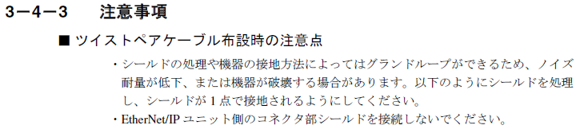
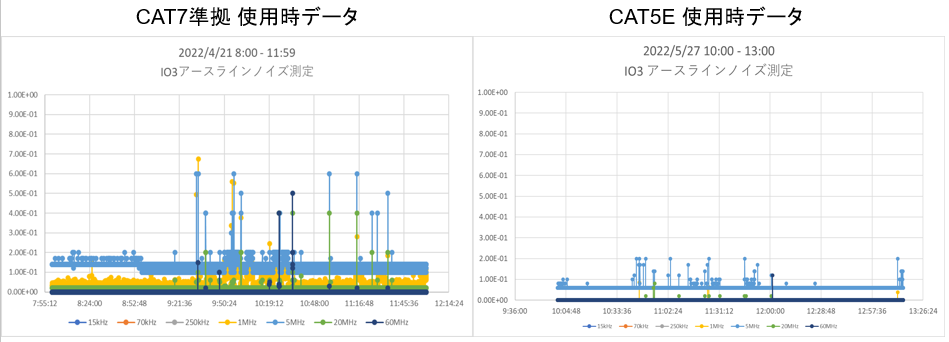

5.4. LANケーブルの変更
5.4.1. 設計の問題点
EtherNet/IP通信では制御機器間をLANケーブルで接続しネットワークを構成します。 当初ノイズ対策に効果があるとの認識で二重シールド施工されたLANケーブルを使って いました。
ところが、このシールド線でグランドループが形成されてしまい外部ノイズの影響を 受け易くなっていました。この影響で通信ユニットの機能接地ラインの電位が変動 してしまい通信異常を発生させていました。
メーカの取り扱い説明書を確認するとネットワークを構成する時の注意事項としてLANケーブル のシールドについて記載があります。
この中でLANケーブルの両端でシールドを介して通信機器の通信ポートと金属的に導通すると グランドループが形成されてノイズ耐量が低下する旨下図の説明がありました。
5.4.2. 対策
LANケーブルをシールド施工の無いツイストペアタイプ（CAT5E)に変更しました。
下図の様にケーブル変更でノイズレベルは低下しています。
5.4.3. 教訓
グランドループが出来るとノイズの影響を受け易くなる事を理解する事
機器の取扱説明書を熟読し、正しい使い方を良く理解する事